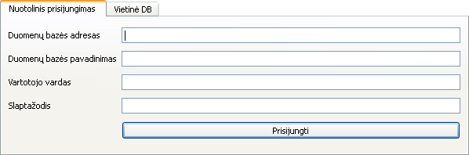
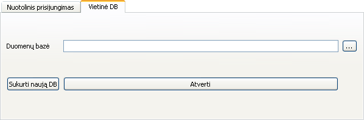

Nuotolinis prisijungimas prie sistemos
- Įvesti nuotolinės duomenų bazės adresą.
- Įvesti nuotolinės duomenų bazės pavadinimą.
- Įvesti vartotojo vardą.
- Įvesti slaptažodį.
- Spausti mygtuką „Prisijungti“
Vietinis prisijungimas prie sistemos
- Jei nėra vietinės duomenų bazės, ją sukurti paspaudus mygtuką „Sukurti naują DB“.
- Jei yra vietinė duomenų bazė, ją pasirinkti paspaudus mygtuką „...“ ir spausti mygtuką „Atverti“.